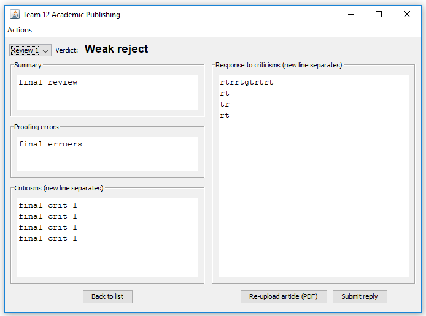
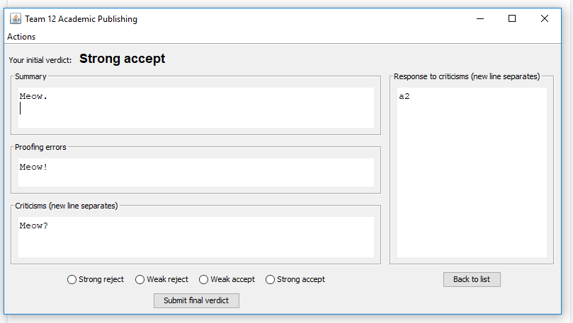
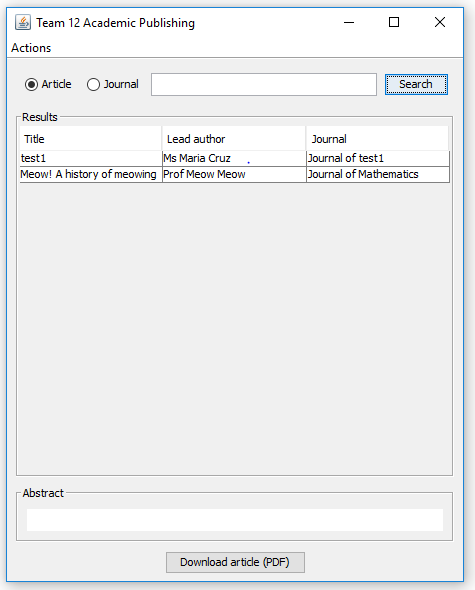
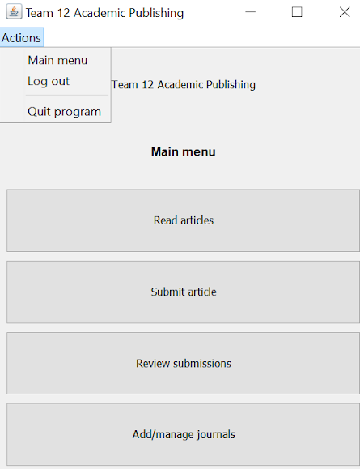

Academic Publication System
| Date | November 2019 – December 2019 |
| Description |
The objective of this project was to create a software system to meet the needs of a
publication system.
The system was implemented in Java, included a database in MySQL and a user interface in Java Swing. The system supports different user roles having different access rights, and is robust to obvious cyber-attacks. |
| Results | First Class Mark |
| How it works |
UI:We spent a lot of time trying to improve user experience.We used MigLayout, which enabled us to create responsive and easy to use interfaces. Thanks to the modularity of the code we have written, we could easily reuse one interface many times.   Next feature which improves the user experience is a drop-down menu at the top of each interface. It makes navigating through different pages much easier and faster.   Security:We made sure that our system and the sensitive data provided by the users are safe but at the same time we did not want to decrease the user's experience from using our system by implementing too many complex security features. That is why, after many discussions, we have implemented the following features:In order to make users’ data secure we have decided to use SHA 512 hashing algorithm with 128 bit salt to encrypt the password before it is sent to the database. Thanks to that no sensitive data is stored in the database in unchanged form. Additionally, log in details (hashed password, salt, username) are stored in the separate table. To make sure that getting and inserting data to the database is secure, we used prepared statements for all database queries. That means the query and the data are sent to the database server separately so we fully eliminated the risk of SQL injection. Additionally, we wrote one Query function which we reused several times for multiple prepared statements. Consequently, by avoiding repetitions we made our system more efficient. Finally, to check if all functions are secure, each individual member of the team tested them in his own unique way. |